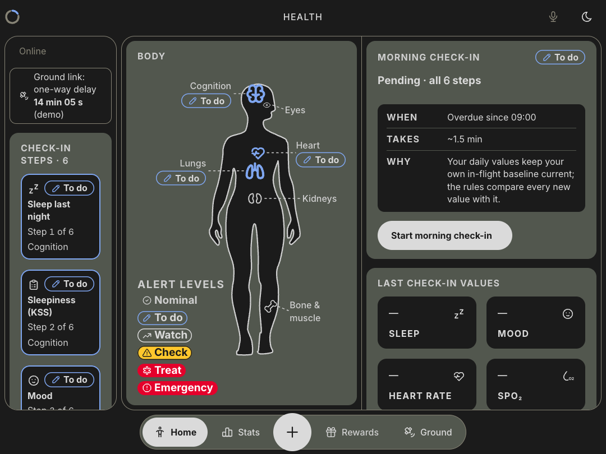

The solution · the challenge’s five questions

01
Measure What can be measured in space?
Devices that already fly and a reaction test.
02
Compare How do values change up there?
Against your own normal values and NASA’s 5 hazards.
03
Explain Why is the test needed?
What changed, why it matters and how it was decided.
04
Alert When should someone be called?
Six alert levels, from self-care to calling Earth.
05
Act What prevents a crisis?
A sourced next step, on board, with no waiting.
Six Dots Companion